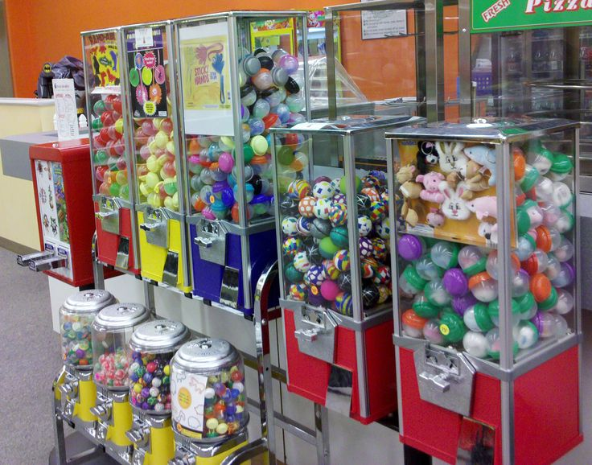

Posted on 5/02/2016
UPDATE: Delight Works has now unbanned China's IP.
So recently Delight Works, the Japanese company developing Fate:Grand Order has decided to fix its "re-rolling" problem by banning China's IP. To be honest, that's just a temporary fix that doesn't really do anything except anger any real players unlucky enough to use servers located in China. And "re-rollers" can just circumvent the ban by using VPN's. And when you lock out the enitre population of the highest populated country as of right now, that is a major loss.
To understand this problem I'll be explaining a few things first before talking about ways to fix it. First up...
What is rerolling?
For those of you that are new to mobile games, there is a type of free-to-play mobile games commonly refered to as "Gacha" games, which are named after the Japanese Gachapon. The idea is similar to that of a vending machine, but instead of getting something you want, you get something random instead which could or could not be the thing you were looking for. As for the term "rolling," most people compare it to a rolling slot machine.
In most games of this nature, the player is usually given a free roll or a set of free rolls after a tutorial. After that, the game functions similarly to that of a trading card game where you pay money, whether earned in-game or through microtransactions, in order to get various rarities of goodies. Usually premium currency can be earned fairly quickly for even more rolls. If a players' roll wasn't particularly a good one or just something they did not want, most players will start the game over and "re-roll" until they get a good roll...usually by un-installing the app, deleting any local files, re-downloading the mobile game, and doing the tutorial all over again. This process, repeated ad-nauseum, can add pressure on the server in charge of makig the calulation, eventually ending up with what essentially is a DDOS attack.
"Re-rolling" becomes an issue when either a really popular game has a special event, doubly so if it is a limited-time special event. Because most mobile games have a feature where you can transfer your data to another device, this opens up the opportunity for people to make some money. Much like in a trading card game, certain prizes have a higher individual price with the main determining factors being power and rarity. The higher both factors are, the higher the price for prize is. With a bit of time and luck, a person's account can be worth anywhere between $5 or $100. Which, considering that the game costs nothing to start playing and that you can end up with something that can cost upwards to $100, leads to some people re-rolling and selling accounts for really good money. This puts more pressure on the servers that have to calculate the rolls and update the accounts server side.
Posted on 5/04/2016
So how can we stop this issue?
Well, just like how you can't stop a flood or can't really stop a DDOS attack from happening, I'm sad to say that there really isn't a solution to stop this problem. There are always going to be ways to "re-roll" accounts. The key here is to try mitigate "re-rolling" by spread the oncomming traffic across multiple servers hosting the game and by providing a good enough service to players such that they are willing to allow slow downs and disconnections every once in a while.
What do I do to provide a good service?
Unlike most DDOS attacks, you have to treat each and every single connection as a real player since server-based free-to-play games are more like a service than a game. And because it is more like a service than a game, you have to try and keep the players' good will so that they will keep comming back and eventually purchase something via micropayments in the future, even if you are forced to cater to the desires of the "whales," which is a topic for another time. If the service is good at encouraging the players to play the game, players are more likely to give the game some slack when they experience slowdown due to the high traffic the servers are experiencing.
Whenever I play Brave Frontier, Final Fantasy: Brave Exvius, Phantom of the Kill, or Puzzles and Dragons and I experience slow downs or disconections, I don't really feel that bad about it since the companies behind those games often times have challenging and rewarding content. And whenever something happens that negatively impacts my game play experience, the companies usually try to make up for that by extending events for a few days, releasing exciting content, or giving out free stuff including the occasional free premium currency. It is because of those things that make me want to continue to play and support the game despite their servers going down for maintenence every few months or so.
I understand why I need to provide a good service, but what about my servers?
Other than the obvious answer of "get better servers" or "get more servers," there are ways of managing the oncoming traffic of players. You have to remember that unlike regular DDOS attacks where you can filter humans from human-like bots, you really can't do that with a free-to-play game. You could, however:
Just whatever you do to better handle incomming traffic done by your playerbase or "re-rollers," just remember to try not to anger your playerbase too much.